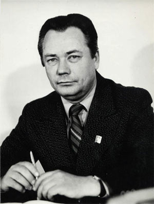
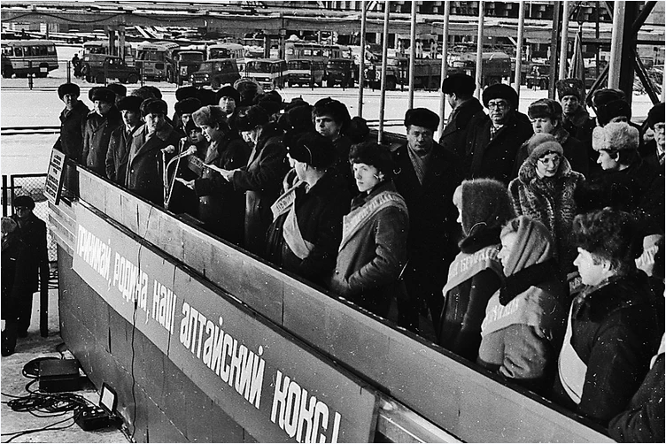

ИСТОРИЯ РАЗВИТИЯ АО «АЛТАЙ-КОКС»
21 января 1972 г. создана дирекция строящегося Алтайского коксохимического завода, ныне ОАО
«Алтай-кокс».
Алтайский коксохимический завод — градообразующее предприятие г. Заринска. Для жителей
города Коксохим — это судьба; сложная, интересная жизнь; это история, которая продолжается
и сегодня.
В марте 1968 г. Совет Министров РСФСР утвердил задание на разработку проекта Алтайского
коксохимического завода с размещением его в районе ст. Заринская Западно-Сибирской
железной дороги. Станция находилась в удобном географическом и транспортном положении.
Выбранная площадка была ровной и без скосов. По ней проходила линия ЛЭП, рядом —
электрифицированная дорога «Кузбасс—Барнаул». Имелись соответствующие сырьевые
ресурсы.
Приказом Министерства черной металлургии СССР от 21.01.72 г. № 57 была создана
дирекция строящегося Алтайского коксохимического завода.
Строительство нового коксохимического предприятия было обусловлено возрастающей потребностью
в коксе
черной и цветной металлургии, химической промышленности, других отраслей народного
хозяйства.
Сырьевой базой являлись угли Кузнецкого бассейна. Основное назначение завода —
производство
кокса, коксового газа и химических продуктов коксования.
В 1972 г. директором завода был назначен Александр Антонович Котович. Он бессменно
проработал директором до февраля 1986 г. (до своей преждевременной кончины).
В феврале 1972 г. на место будущего завода пришли первые два трактора
и бульдозер, был вынут первый ковш грунта.
В марте 1974 г. Коксохим стал краевой ударной комсомольской стройкой. В январе
1976 г. ЦК ВЛКСМ объявил стройку Всесоюзной ударной комсомольской. Завод и город
действительно строила вся страна. На строительстве завода трудилось более 7 тысяч
человек,
молодежи среди них — более 4 тысяч.

Котович Александр Анатольевич
29 ноября 1979 г. Указом Президиума Верховного Совета РСФСР поселок был переименован в г.
Заринск. Этим все жители Заринска обязаны именно Коксохиму.

Митинг по поводу пуска 1й коксовой батареи
3 декабря 1981 г. коксовая батарея № 1 (КБ-1) была поставлена под
загрузку.
4 декабря 1981 г. перед первой коксовой состоялся многочисленный митинг.
В почетную
символическую бригаду по пуску КБ-1 вошли заслуженные первостроители.
5 декабря 1981 г. в 0 часов 45 минут был получен первый алтайский
кокс.
В тот день строители передали трудовую эстафету заводчанам.
25 октября 1982 г. выдала первый кокс вторая коксовая батарея. Ее пуском была
завершена
первая очередь строительства завода.
31 декабря 1983 г. была запущена коксовая батарея № 3,
а 18 августа
1985 г. — КБ-4. Этим было завершено строительство 2-й очереди завода.
В июне 1984 г. было начато строительство КБ-5, КБ-6. Затем оно было приостановлено
и возобновлено в 2000 г.
До 1992 г. завод являлся государственным предприятием, находящимся в федеральной
собственности.
В соответствии с Указом Президента РФ «Об организационных мерах
по преобразованию государственных предприятий в акционерные общества»
от 01.07.92 г. № 721, на основании постановления администрации г.
Заринска от 28.10.92 г. № 293 АКХЗ был преобразован в ОАО
«Алтай-кокс».
Все трудности тех лет не обошли стороной и Коксохим. Несмотря на очень большие проблемы,
завод смог укрепиться как на российском, так и на мировом рынке. Особенность
Коксохима — производство качественного кокса многих сортов различного назначения.
28 июля 2000 г. был пущен цех смолоперегонки. Получаемый пек по качеству соответствует
мировым образцам.
3 апреля 2006 года ОАО «Алтай-кокс» вошел в состав одной из самых
прибыльных
сталелитейных компаний мира — Новолипецкого металлургического комбината (НЛМК).
20 октября 2006 года в ОАО «Алтай-кокс» запущен в эксплуатацию
уникальный
комплекс коксовой батареи № 5. В настоящее время коксовая батарея
№ 5 по техническим и экономическим параметрам не имеет аналогов
в России. Две полубатареи соединены в один блок, который содержит 82 камеры.
Мощность
комплекса коксовой батареи № 5 составляет 1140 тыс. тонн кокса 6 %
влажности
в год.
В октябре 2007 года — ОАО «Алтай-кокс» первым в Алтайском крае
прошел
сертификацию на соответствие стандарту ISO 9001, что подтверждает высокие достижения
предприятия
в области управления качеством. Получение Сертификата способствует повышению
конкурентоспособности
Компании и дальнейшему укреплению его позиций на внешнем и внутреннем рынках.
Июль 2008 года — на ОАО «Алтай-Кокс» введен в эксплуатацию новый
промышленный объект — установка дешламации смолы. Она оснащена современной автоматизированной
системой управления и позволяет получать продукцию высокого качества, решать вопросы утилизации
химических отходов и сокращать трудозатраты на очистку смолохранилищ.
Многие коксохимики награждены орденами и медалями. Среди награжденных орденом Трудового Красного
Знамени — Александр Антонович Котович, Олег Алексеевич Гладун, Виктор Федорович Цимфер, Иван
Иванович Антюфриев, Александр Александрович Дейс. Орденом «Знак Почета» награждены: Ольга
Павловна Банникова, Павел Михайлович Осадчий, Ольга Павловна Вебер, Сергей Евдокимович Колесников, Юрий
Владимирович Кузнецов, Елизавета Ивановна Сутурина, Виктор Власович Митяев, Петр Андреевич Петров
и др.
9 мая 2007 года — Президент России Владимир Путин подписал распоряжение о поощрении
коллектива открытого акционерного общества «Алтай-кокс» за большой вклад
в развитие коксохимического производства. «Алтай-кокс» — первая
в регионе компания, удостоенная Благодарности Главы государства за высокие результаты
производственной деятельности.